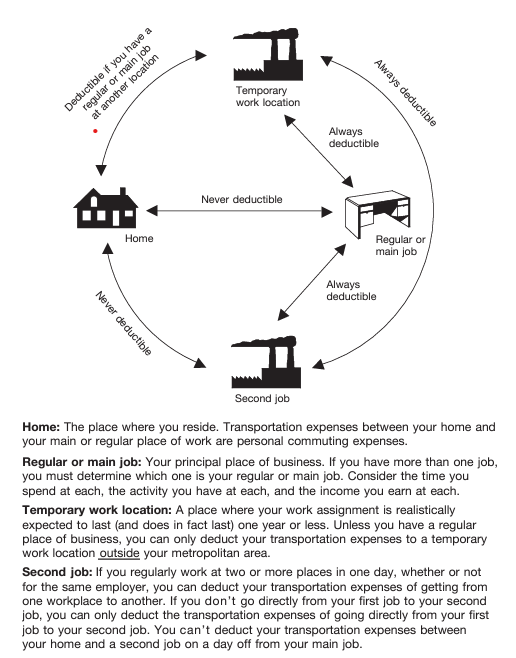

Overview
While running your business, you can deduct certain transportation
expenses without having to travel far from home. These deductions cover
a variety of transportation modes including air, rail, bus, taxi, and
notably, the use of your personal car. There are several ways to
qualify.
Costs incurred while
traveling between different work locations
within your tax home area qualify for deductions. Your tax home is the
city or general area where your business is based. Expenses for
visiting clients or attending business meetings
away from your regular workplace are deductible. You can deduct expenses
when
traveling from your home to a temporary workplace, provided you also have one or more regular workplaces. These
temporary workplaces can be within or outside your tax home area.
If you travel overnight, different rules apply, particularly in
calculating car expenses.
This brief on
Publication 463, Travel, Gift, and Car Expenses, provides a basic understanding to help you get started with your
deductions for business transportation. Pub 463 is sixty-one pages long
and this brief covers
Chapter 4 Transportation and
Chapter 5 Recordkeeping. Refer to the
comprehensive rules laid out in the IRS documentation for detailed
guidance on car expenses and other specific situations.
What you'll learn...
- When Are Transportation Expenses Deductible?
- How to Deduct the Car Expenses
- Recordkeeping
When Are Transportation Expenses Deductible?
Commuting costs are daily expenses of
driving between home and regular workplaces. Generally, they are not
deductible but there are some exceptions. Traveling to a temporary
workplace outside your metropolitan area is deductible. If your home is
your principal place of business, you can deduct transportation costs
between your home and another work location in the same trade or
business, regardless of the work's duration or distance.
Figure B. When Are Transportation
Expenses Deductible?
If your home is your principal place of business, do not use this
chart.

Temporary Work Location
-
Regular and Temporary Sites: If you
have one or more regular work locations away from your home and
commute to a temporary work location in the same trade or business,
you can deduct daily round-trip.
-
Duration of Employment: A job location
is temporary if it is expected to last for one year or less.
-
Change in Duration: If a job initially
expected to last less than a year extends beyond that, it is still
temporary until your expectations change. Once it is expected to last
more than a year, it no longer qualifies as temporary.
Overnight Stays
If the temporary work location is far enough from your regular work area
that you need to stay overnight, different rules apply. In this case,
you may be eligible for travel expense deductions.
No regular place of work
If you do not have a fixed workplace but usually work within the
metropolitan area where you reside, you can deduct transportation cost.
Temporary Work Sites Outside Your Metropolitan Area
You can deduct transportation costs for travel between your home and a
temporary work location outside your metropolitan area. The metropolitan
area typically includes the city and its suburbs.
Non-Deductible Commuting Expenses
Daily transportation costs between your home and any temporary work
sites within your metropolitan area are not deductible. These are
considered regular commuting expenses and are not eligible for tax
deductions.
Two places of work
When your workday involves traveling between two different job
locations, there are deductions you can take. You can deduct the costs
of traveling directly from one workplace to another within the same day,
regardless of whether these locations belong to the same employer. If
you do not travel directly from one job to the other due to personal
reasons, you can only deduct the amount it would have cost you to travel
directly between the two.
Non-Deductible Commuting Expenses
Costs associated with traveling between your home and a part-time job on
your days off from your main job are considered commuting expenses and
are not deductible.
Commuting Expenses
When it comes to commuting between your home and your primary workplace,
certain costs are not deductible. Expenses incurred while taking public
or driving a car between your home and your main or regular workplace
are non-deductible. These are personal commuting expenses. This
non-deductibility applies regardless of the distance between your home
and your workplace or whether you engage in work-related activities
during the commute.
-
Parking Fees: Costs for parking at your
place of business
-
Advertising Displays on Car: Adding
business advertisements to your car does not convert the vehicle's use
from personal to business for tax purposes.
-
Car Pools: Costs related to
participating in a non-profit car pool are not deductible. However, if
you run a car pool for profit, you can deduct car expenses.
-
Hauling Tools or Instruments: Commuting
with tools or instruments in your car is not deductible, but costs
like renting a trailer are deductible.
-
Union Members' Travel: Costs from
traveling from a union hall to a workplace are non-deductible as your
employment location is considered your workplace, not the union hall.
Business discussions or phone calls made during these trips do not
change their classification from personal to business. Only expenses
directly related to business activities, like visiting clients, are
deductible.
Office in the home
If you maintain a qualifying home office that serves as your principal
place of business, you are eligible to deduct certain travel expenses.
You can deduct the transportation costs for travel between your home
office and another work location within the same trade or business. This
includes the costs of driving your car or using other modes of
transportation to get to these other work locations.
To determine if your home office qualifies as your principal place of
business, refer to
IRS Publication 587, Business Use of Your Home
and
Get the most out of your Home Office Deduction for 2024.
How to Deduct the Car Expenses
Business use of your car makes you eligible to deduct car expenses using
one of two different methods. The
Standard Mileage Rate allows you to
deduct a set amount for each mile driven for business purposes. The
Actual Car Expenses method involves
deducting the actual costs of operating your car for business, including
gas, repairs, insurance, and depreciation.
If you qualify to use both the standard mileage rate and actual
expenses, try to calculate your deduction using both methods to see
which one offers a larger deduction.
-
Under the Tax Cuts and Jobs Act, miscellaneous itemized deductions
subject to the 2% floor are suspended for tax years beginning after
December 2017 and before January 2026. This means you can no longer
claim the cost of using your car as an employee for these expenses as
a miscellaneous itemized deduction.
-
Exceptions: Certain individuals, such
as Armed Forces reservists, qualified performing artists, and
fee-basis state or local government officials, can still deduct
unreimbursed employee travel expenses directly from their adjusted
gross income on Schedule 1 (Form 1040), Line 12.
Standard Mileage Rate
The standard mileage rate is an efficient way to calculate deductible
costs. The rate is 65.5 cents per mile. If you cannot or choose not to
use the standard mileage rate, you will calculate your car deduction
using actual expenses.
-
Exclusive Use: If you choose the
standard mileage rate for any year, you cannot claim actual car
expenses for that year.
-
First-Year Choice: To use the standard
mileage rate, you must use this method in the first year your car is
used for business. In subsequent years, you can switch between
standard mileage and actual expenses.
-
Leased Vehicles: For leased vehicles,
if you choose the standard mileage rate, you must continue to use it
for the entire lease period.
-
If you use five or more vehicles simultaneously (like in fleet
operations).
-
If you have claimed a depreciation deduction using any method other
than straight-line for the estimated useful life of the car.
-
If you used the Modified Accelerated Cost Recovery System (MACRS) for
depreciation.
-
If you have claimed a Section 179 deduction, a special depreciation
allowance, or have claimed actual car expenses after 1997 for a leased
car.
Switching from Standard Mileage to Actual Expenses
If you switch to actual expenses after initially using the standard
mileage rate, you must use straight-line depreciation for the remaining
estimated life of the vehicle, adhering to specific depreciation limits.
Reimbursements
If you switch to actual expenses after initially using the standard
mileage rate, you must use straight-line depreciation for the remaining
estimated life of the vehicle, adhering to specific depreciation limits.
Car for Hire
If you switch to actual expenses after initially using the standard
mileage rate, you must use straight-line depreciation for the remaining
estimated life of the vehicle, adhering to specific depreciation limits.
-
Five or More Cars: If you own or lease
five or more cars that are used for business simultaneously, you
cannot use the standard mileage rate for any of them. In this case,
you would need to calculate your deductions based on actual car
expenses.
-
Alternating Vehicle Use: If you
alternate the use of these cars for business (meaning you do not use
them at the same time), this rule does not apply, and you may still be
eligible to use the standard mileage rate.
Interest on Car Loans
If you are self-employed and use your car for business, you can deduct
the portion of the interest expense that corresponds to the business use
of the car. For example, if 60% of your car's use is for business, you
can deduct 60% of the interest expense on Schedule C (Form 1040).
If you finance your car purchase through a home equity loan, you might
be able to deduct the interest. Reference IRS Publication 936, "Home
Mortgage Interest Deduction," for more details.
Personal Property Taxes
You can deduct the business portion of state and local property taxes
for motor vehicles.
Parking Fees and Tolls
Business-related parking fees and tolls are deductible, even if you use
the standard mileage rate. However, parking fees at your regular place
of work are considered nondeductible commuting expenses.
Sale, Trade-in, or Disposal of a Car
If you sell, trade in, or dispose of your car in any way, you may need
to calculate gain or loss for the transaction, or adjust the basis of
your new car.
Actual Car Expenses
If you opt not to use the standard mileage rate, you can deduct the
actual expenses associated with using your car for business. If your car
serves both personal and business purposes, you must allocate expenses
based on usage. For example, if 60% of your driving is for business, you
can deduct 60% of your total car expenses.
-
Operating Expenses: Gas, oil, and
repairs.
-
Ownership Costs: Depreciation,
licenses, registration fees, lease payments, and insurance.
-
Other Expenses: Garage rent, parking
fees, and tolls.
Continued Deductions for Fully Depreciated Vehicles
Even if your car is fully depreciated, you can continue to deduct other
operating costs associated with business use. Maintain proper records to
support your deduction.
-
Interest on Car Loans: Interest is
deductible. See
Interest on car loans under the
Standard Mileage Rate.
-
Taxes and Sales Tax: Sales taxes are
added to the car's basis and recovered through depreciation.
-
Fines and Collateral: Expenses related
to traffic violations are not deductible.
-
Casualty and Theft Losses: Losses not
covered by insurance may be deductible under certain conditions. Refer
to
IRS Publication 547, Casualties, Disasters, and Thefts, for details.
-
Capital Expenses: The cost of the car,
including sales tax and improvements, typically is not deductible
immediately but can be depreciated.
-
Section 179 Deductions: Allows for an
immediate deduction of part or the entire purchase price of the
vehicle, subject to certain limitations and conditions.
-
Standard Vehicle Definition: For
depreciation, a car includes any four-wheeled vehicle primarily for
use on public streets with an unloaded gross vehicle weight of 6,000
pounds or less.
-
This definition excludes vehicles like ambulances or hearses used
directly in a business, or vehicles used for transporting persons or
property for pay.
Qualified Nonpersonal Use Vehicles
Vehicles modified for business (e.g., with permanent shelving or company
logos) and unlikely to be used for personal purposes, like certain
delivery trucks, qualify for different depreciative treatment.
Section 179 Deduction
Section 179 deductions allow businesses to deduct the full purchase
price of qualifying vehicles and other assets used in a business,
subject to certain limits.
Eligibility and Limits
You can elect to deduct the cost of a car that qualifies as Section 179
property in the year you place it in service. The vehicle must be used
more than 50% for business to qualify for the Section 179 deduction. If
it's used less, the benefit might be reduced or eliminated.
-
2023 Deduction Limit: The maximum
deduction in 2023 is $1,160,000.
-
Total Investment Limitation: This
begins to phase out dollar-for-dollar after $2,890,000 of total
property is placed in service during the tax year, eliminating the
deduction entirely above $4,050,000.
-
Specific Vehicle Limit: For certain
heavy vehicles, including some SUVs primarily designed to carry
passengers, the deduction is capped at $28,900.
Special Considerations for Vehicles
- $12,200 for vehicles before September 28, 2017
-
$20,200 after September 27, 2017, unless you do not claim the special
depreciation allowance, then $12,200.
Electing the Deduction
The election must be made in the year the car is placed in service. Use
Form 4562 for depreciation and amortization.
-
Business Use Decline: If the business
use of the vehicle drops to 50% or less in subsequent years, you must
recapture (reclaim as income) any excess depreciation claimed. This
includes adjusting for any Section 179 deduction taken.
-
Recapture Process: This involves
reporting the recaptured amount as ordinary income in the year the
business use falls below 50%.
Disposing of the Vehicle
When you dispose of a vehicle on which you've claimed the Section 179
deduction, the deduction is treated like any other depreciation for
recapture purposes. Any gain on the sale is considered ordinary income
up to the amount of the Section 179 deduction plus any allowable
depreciation.
Refer to
IRS Publication 946, How to Depreciate Property, for comprehensive information on depreciation rules.
Leasing a Car
When leasing a vehicle for business, you can choose between the standard
mileage rate or actual expenses to calculate your deductible costs.
-
Business Use: You can deduct the
portion of each lease payment that corresponds to business use.
-
Advance Payments: Any upfront payments
made at the start of the lease must be spread out over the entire
lease term for deduction purposes.
-
Purpose: For leases of 30 days or more,
you may need to reduce your lease payment deduction by an inclusion
amount. This adjustment mirrors what would happen with depreciation
limits if the vehicle were owned rather than leased.
-
Calculation: The inclusion amount is
calculated by taking a portion of the vehicle's fair market value,
multiplied by the percentage of the vehicle's business use, then
prorated for the number of days in the tax year.
-
Definition: This is the price at which
the vehicle would sell under normal conditions.
-
Use in Calculations: Determine the fair
market value on the first day of the lease term; if your lease
agreement specifies a capitalized cost, use this as the fair market
value.
-
Identify the Relevant Appendix:
Depending on the year the vehicle was placed in service; you will
refer to a specific IRS appendix that provides inclusion amounts for
different fair market values.
-
Prorate the Amount: Adjust the
inclusion amount from the appendix based on the number of days in the
tax year the lease covers.
-
Apply Business Use Percentage: Multiply
the prorated amount by the percentage of the vehicle's business use.
-
2023 Lease Example: If you leased a car
on January 17, 2023, with a fair market value of $62,500 and used it
75% for business, you would refer to Appendix A-6 and adjust the
inclusion amounts for each tax year based on usage and days in the
year.
-
Change in Use Example: If you initially
leased a vehicle for personal use but later switched to business use
(like starting a self-employed consulting job), you must reassess the
fair market value at the time of conversion and calculate inclusion
amounts accordingly.
Reporting Requirements
Reporting for sole proprietors and farmers should be done through
Schedule C or Schedule F of Form 1040, respectively
Disposition of a Car
When you dispose of a car used for business, consider the various tax
outcomes selling, trading in, or losing the car to a casualty or theft.
-
Depreciation Recapture: Any gain on the
sale of the vehicle with depreciation deductions taken in previous
years is taxed as ordinary income. This includes Section 179
deduction, clean-fuel vehicle deductions, and special depreciation
allowances.
-
Casualty or Theft: If the car is
disposed of due to casualty or theft, and you receive insurance
proceeds exceeding the car's adjusted basis, you may realize a gain.
However, if you reinvest the insurance proceeds in similar property
within a specific time frame, you might not have to recognize this
gain. The basis of the new property is its cost minus any deferred
gain.
-
Publication 544: For detailed guidance
on how to report the disposition of a car, refer to IRS Publication
544, which covers sales and other dispositions of assets.
-
Like-Kind Exchanges: For exchanges
completed after December 31, 2017, like-kind exchanges are generally
limited to real property not held primarily for sale. When you trade
in your car for another car, typically no gain or loss is recognized
if the exchange qualifies as like-kind.
-
Standard Mileage Rate: If you used the
standard mileage rate to deduct car expenses, depreciation is included
in that rate. You must adjust the basis of your car by the amount of
depreciation factored into the standard mileage rate over the years of
usage.
-
Actual Expense Method: If you used the
actual expense method, refer to the depreciation tables in Publication
946 to calculate depreciation for the year of disposition, adjusting
for any applicable conventions (e.g., half-year or mid-quarter).
Practical Example
Imagine you purchased a car for $25,500 in 2018 and used the standard
mileage rate to calculate car expenses. Over the years, you accumulated
a total depreciation deduction of $24,415. By the end of 2023, the
adjusted basis of the car is $1,085. If you dispose of the car at this
point, any sale price above $1,085 would potentially be subject to tax
as a gain, largely as ordinary income due to depreciation recapture.
-
Quarter of Disposal: If disposing of
the car within the recovery period using the actual expenses method,
the depreciation deduction for the year of disposal must be adjusted
based on the quarter in which the car is disposed, using percentages
provided in Publication 946.
-
Depreciation Limits: Ensure that the
calculated depreciation does not exceed the limits set by the IRS,
adjusting as necessary.
Recordkeeping
Proper recordkeeping is essential for proving transportation expenses
and staying ready to withstand scrutiny if necessary. To effectively
prove your business expenses, you need to maintain timely and accurate
records that can support each element of the expense. Document the cost
of the car, the date you started using it for business, business
mileage, and total annual mileage.
Adequate records include an account book,
diary, log, trip sheet, or similar record, and must be kept in a written
format. A computer record is considered written documentation.
- Amount of the expense
- Date the expense happened
- Place or location of the expense
- Purpose of the expense
- Expenses under $75 except lodging
-
Transportation expenses where a receipt is not readily available
-
Timely Recordkeeping: The IRS places
great value on records that are kept at or near the time the expense
is incurred. A weekly log can be sufficient if it accurately reflects
the entire week's expenses.
-
Regular Updates: Regular updates to
your records help in maintaining their accuracy and relevance.
-
Confidential Information: If your
records include confidential information, ensure it's recorded in a
secure and compliant manner.
-
Invoices and Bills: Invoices and other
forms of direct evidence can supplement your records, especially for
ongoing business uses like deliveries.
-
Destroyed Records: In cases where
records are destroyed due to circumstances beyond your control, such
as natural disasters, you may reconstruct these records to
substantiate your claims.
Record Retention
Keep your records for at least three years from the date you file your
income tax return on which the deduction is claimed. For business use of
a car, maintain records for each year of the recovery period.

 Horacio Bermudez
Horacio Bermudez